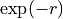
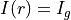
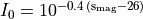

shapemodel
Under this identifier are defined the parameters that define a source shape.
s_center_x float
Position along the X axis for the center of the source in arcsec. The reference point for this range is the barycenter of sources is attached to a system of multiple images, or the reference point defined in the .par file if not.
s_center_y float
Position along the Y axis for the center of the source in arcsec. The reference point for this range is the barycenter of sources is attached to a system of multiple images, or the reference point defined in the .par file if not.
s_sigx float
Value of the size of the major axis in arcsec
s_sigy float
Value of the size of the minor axis in arcsec
s_angle float
Value of the orientation of the ellipse defining the source. The angle is defined anti-clockwise from west to north axis.
s_mag float
Value of theunlensed magnitude of the source
index float
Value of the Sersic index  for sources modeled with Sersic profile.
for sources modeled with Sersic profile.
z float
Redshift of the source.
id string
Identifier of the source.
type int
Surface brightness density type
1: Velocity field

2: Exponential disk 
3: 2D Gaussian 

4: Sersic
5: Uniform disk within radius for
with  and